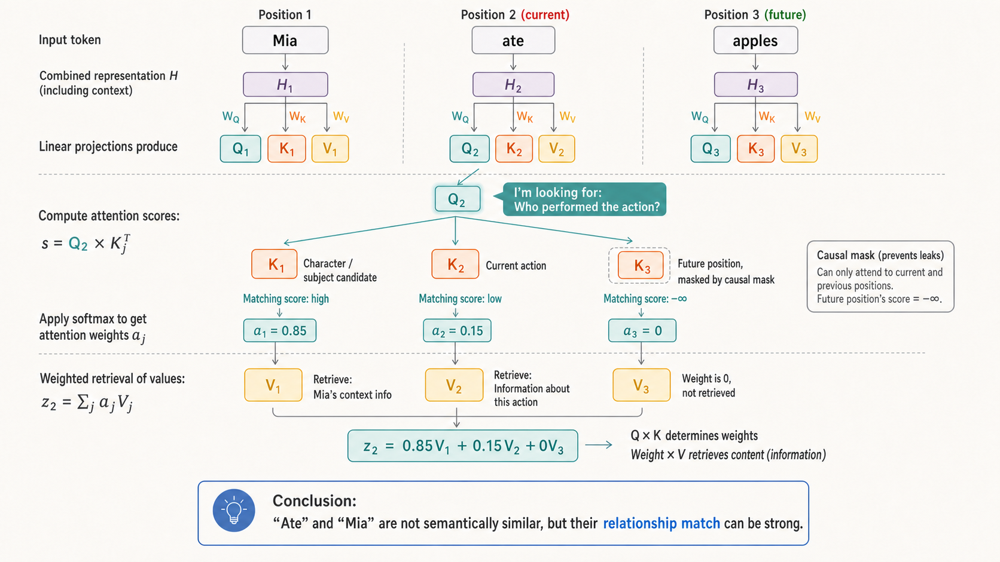
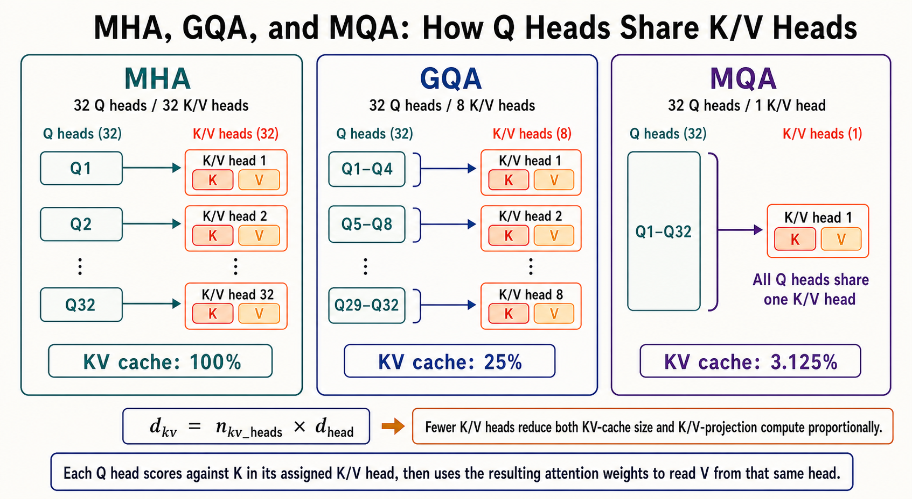
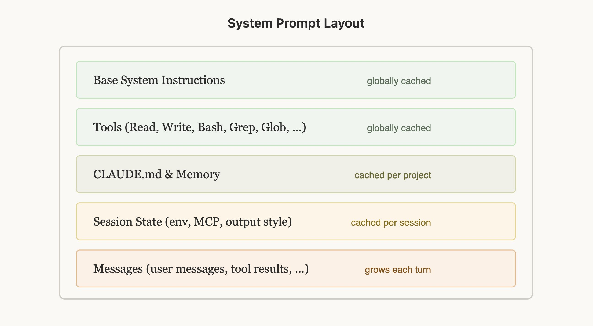

LLM INFERENCE
How Transformer LLMs Generate Text: Prefill, Decode, and the KV Cache
How does a trained Transformer generate text one token at a time—and how does the KV cache keep it from recomputing the same prefix at every step?
This article starts with a trained model. For embeddings, Transformer blocks, attention, and training, read Transformer LLMs for Beginners.
1. From Prefill to Decode
Once training is complete, the model's WQ, WK, WV, MLP, and other learned weights remain fixed. What changes from token to token is the hidden state H at each layer—and therefore the queries, keys, and values projected from it.
Inference has two stages:
- Prefill processes the entire input—the system prompt, conversation history, documents, and current request—in parallel. It produces a key and value for every input token at every layer. If an eligible prefix has already been cached by the serving system, some of this work may be reused.
- Decode generates new tokens sequentially. To compute attention for the next token, it uses the keys and values of every token that came before it.
Prefill: Process the Known Prompt in Parallel
Suppose the prompt is:
I like eating applesAll four tokens are known when the request begins. Prefill can therefore process every position in parallel at each layer, just as the model does during training:
all prompt tokens
→ embeddings produce H⁽⁰⁾
→ layer 1 projects Q⁽¹⁾, K⁽¹⁾, and V⁽¹⁾ for every position → H⁽¹⁾
→ layer 2 projects Q⁽²⁾, K⁽²⁾, and V⁽²⁾ for every position → H⁽²⁾
→ …
→ layer L produces H⁽ᴸ⁾The causal mask still applies. The token I cannot see like, eating, or apples. Parallelism means that matrix operations cover many positions at once; it does not allow information to leak backward from future positions.
Prefill completes two jobs:
- It uses the final hidden state at the last prompt position to compute the logits for the first token to be generated.
- It stores the keys and values produced for the prompt at every layer, creating the initial KV cache.
Decode: Reuse Keys and Values
First, recall the attention relationship from the previous article. At position 2, the current token's query Q2 is compared with the keys of the positions it may attend to. After softmax, those scores become attention weights, which are then used to combine the corresponding values.

The same pattern holds at position n: Qn scores the keys from positions 1 through n, and the resulting weights retrieve information from their values. During autoregressive generation, positions 1 through n−1 are history. Their keys and values are read again for every later token.
This is the central observation: the keys and values of earlier tokens are reused repeatedly.
At layer l, a historical token's key and value are:
The KV cache stores those K and V tensors for every historical token at every layer. Most directly, it eliminates repeated historical K/V projections. More broadly, it prevents the model from having to run historical tokens through the preceding attention and MLP computations again merely to reconstruct the same keys and values.
Caching does not eliminate attention over history. The new token still needs a fresh query, that query still scores all cached keys, and the attention weights still read the cached values.
How Much Computation Does the KV Cache Save?
Start with the easiest part to quantify: projecting the historical tokens into keys and values.
Suppose one layer has T historical tokens. Their hidden states form the matrix
The K and V projection matrices have shapes
- dmodel is the width of the hidden state passed between Transformer layers for each token.
- dhead is the dimensionality of one attention head.
- nkv_heads is the number of K/V heads.
- dkv is the combined width of all K heads—or all V heads. It need not equal dmodel: the two are usually equal in MHA, while dkv is often smaller in GQA and MQA.
For K=HWK, each output element requires roughly dmodel multiply–accumulate operations. Projecting T historical tokens into K at one layer therefore costs
A deliberately small example makes the count concrete.
Let T=2, dmodel=3, and dkv=2. Then
The K matrix has 2×2=4 output elements. Its first element for the first token is
This dot product spans dmodel=3 dimensions, so it needs three MACs. Four output elements therefore require
The K projection in this example therefore costs 12 MACs.
In other words, T determines the number of rows in K, dkv determines the number of outputs in each row, and every output requires a dot product across dmodel.
V has the same shape and compute cost but uses a separate matrix WV. The combined historical K and V projections therefore cost
For a model with L layers, caching historical K/V avoids approximately
This expression deliberately measures the projection component. The complete benefit of caching is larger because historical tokens also avoid another pass through the rest of each layer.
What Does Caching Cost?
The trade-off is accelerator memory. Every token needs one key and one value at every layer, so the approximate KV-cache size is
- The leading 2 accounts for both K and V.
- nbatch is the number of sequences being served together; doubling the batch doubles the cache.
- nlayers appears because every layer has its own K/V tensors; they cannot be shared across layers.
- ntokens is the number of cached historical tokens.
- nkv_heads and dhead determine the stored K/V width at each layer.
- byteselement is the storage per value; FP16 and BF16 usually use two bytes.
Removing ntokens and nbatch gives the cache growth for one additional token in one sequence:
Consider a 32-layer model with 8 K/V heads, a head dimension of 128, and FP16 or BF16 storage:
That is 128 KiB per token for one sequence.
At batch size 1, a 4,096-token cache needs approximately
The resulting cache is approximately 512 MiB.
At batch size 4, that becomes roughly 2 GiB. Real systems may add alignment, paging, preallocation, or quantization metadata, but the linear relationship remains: longer contexts, larger batches, more layers, more K/V heads, or more bytes per element all increase cache memory.
Can We Use Fewer Cached Heads?
Yes. Reducing the number of K/V heads lowers both K/V-projection compute and KV-cache memory at the source. This is the central difference among MHA, GQA, and MQA:
- Multi-Head Attention (MHA) uses the same number of query, key, and value heads. Each query head gets its own corresponding K/V head. This gives the model the most independent K/V representations—and uses the most cache.
- Grouped-Query Attention (GQA) keeps many query heads but divides them into groups. Query heads in one group share a K/V head. With 32 query heads and 8 K/V heads, every group of four query heads shares one K/V head.
- Multi-Query Attention (MQA) lets every query head share one K/V head. It is the most aggressive endpoint of the same design spectrum and uses the least cache.

For 32 query heads and dhead=128:
| Method | Q heads | K/V heads | \(d_{kv}\) | Relative KV-cache size | Relative K/V-projection compute |
|---|---|---|---|---|---|
| MHA | 32 | 32 | 4096 | 100% | 100% |
| GQA | 32 | 8 | 1024 | 25% | 25% |
| MQA | 32 | 1 | 128 | 3.125% | 3.125% |
The reduction applies to K/V heads—not to the query heads. Each query head and the K/V head assigned to it still use the same dhead=128, so their dot-product dimensions match. What changes is whether several query heads receive independent K/V representations or share one.
GQA and MQA are not mathematically identical to MHA: sharing K/V heads reduces the model's freedom to represent different attention patterns. When trained for that architecture, however, they can exchange a modest quality cost for a much smaller cache, lower memory-bandwidth pressure, and higher Decode throughput. GQA is commonly used as the middle ground.
The 25% and 3.125% figures apply only to the KV cache and K/V projections. They do not mean that total model compute falls by the same amount: the Q projection, parts of attention, the output projection, and the MLP remain.
How Providers Price Cached Tokens
Prompt-caching prices vary by provider, model, and product. A cache read and a cache write do not necessarily use the same rate.
For the OpenAI API, GPT-5.6-family cache writes
are reported in cache_write_tokens and billed at
1.25× the uncached-input rate. Earlier model families do not add
a separate cache-write charge, although the first uncached input
still costs the normal input rate. Cache reads are reported in
cached_tokens and billed at the model's cached-input
rate. That rate is model-specific—not a universal ratio. For
example, the current
GPT-5.6 Sol model page
lists $5.00 per million input tokens, $0.50 per million cached
input tokens, and $30.00 per million output tokens.
Codex credits are a separate product accounting system. The current Codex rate card publishes credit costs per million input, cached-input, and output tokens; it does not list a separate cache-write category.
| Model | Input tokens | Cached input tokens | Output tokens |
|---|---|---|---|
| GPT-5.6 Sol | 125 credits | 12.5 credits | 750 credits |
| GPT-5.6 Terra | 50 credits | 5 credits | 300 credits |
| GPT-5.6 Luna | 5 credits | 0.5 credits | 30 credits |
| GPT-5.5 | 125 credits | 12.5 credits | 750 credits |
2. Prompt Caching Across Requests
A normal KV cache solves historical reuse within one generation:
Multiple Decode steps in one request do not recompute earlier tokens.Prompt caching extends that idea to a common prefix shared by multiple requests:
Request A: fixed system prompt + fixed long document + question A
Request B: fixed system prompt + fixed long document + question BIf the provider recognizes an eligible, exactly matching prompt prefix, request B can reuse the intermediate representation or K/V tensors produced when that prefix was prefetched. Only the changing suffix needs a full Prefill pass.
A multi-turn conversation is a special case of the same pattern. From the model's point of view, each API request includes the previous conversation and appends new messages at the end:
Turn 1: System + Tools + User 1
Turn 2: System + Tools + User 1 + Assistant 1 + User 2
Turn 3: System + Tools + User 1 + Assistant 1 + User 2 + Assistant 2 + User 3Prompt caching lets a later request reuse the Prefill work for that common prefix. It does not remove the need to process the new suffix, attend from current queries to historical K/V, or generate output tokens.
OpenAI Prompt Caching Requirements
The following details are OpenAI-specific and were verified against the official Prompt Caching guide on August 3, 2026.
-
Minimum length. GPT-5.6 and later families
require a cacheable prefix of at least 1,024 tokens. GPT-5.5
and earlier models vary by model, typically between 1,024 and
2,048 tokens. Requests below 1,024 tokens still return a
cached_tokensfield, but its value is zero. -
Default breakpoint. GPT-5.6 uses
implicitmode by default and places an implicit breakpoint at the latest user or tool message. It does not automatically fall back to an earlier, unmarked longest common prefix. If that breakpoint includes a timestamp, tool history, or current question that changes every turn,cached_tokenscan be zero even when thousands of earlier tokens match. -
Explicit breakpoint. Put a
prompt_cache_breakpointat the end of stable content and reuse the sameprompt_cache_keyfor requests that share it. Settingprompt_cache_options.mode="explicit"disables the implicit breakpoint, preventing the changing suffix from being repeatedly written to cache.
stable prefix: System Prompt + Tools + fixed documents
↑ prompt_cache_breakpoint
--------------------------------------------------------------------------
dynamic suffix: timestamp + tool results + this turn's user question
The prompt_cache_key also participates in routing.
GPT-5.6 and later require it for their more reliable implicit or
explicit matching. OpenAI currently recommends keeping total
traffic across all prefixes for one key near 15 requests per
minute. Higher-volume workloads should partition traffic across
stable keys; otherwise some requests may route away from the
machine that holds the matching prefix.
The current GPT-5.6 cache TTL is controlled by
prompt_cache_options.ttl. The only supported value
is 30m, which is also the default minimum lifetime;
OpenAI may retain an entry longer.
How to Improve the Cached-Token Hit Rate
First, separate two metrics that are easy to conflate:
- Request hit rate: the fraction of requests that read at least some cached content.
- Token hit rate: the fraction of all input tokens that were read from cache.
In plain language, divide cached input tokens by total input tokens.
Token hit rate is usually the more useful measure. A 10,000-token request that reuses only its first 100 tokens still counts as a cache-hit request, but almost all of its input still requires Prefill.
The central rule is simple: put the most stable, broadly reusable content first, and the most dynamic, local content last.
For an exact-prefix cache, organize a request roughly as:
fixed system instructions and stable tool definitions
→ project-, tenant-, or knowledge-base context
→ session context
→ conversation messages and tool results
→ this turn's user input and dynamic stateOnce a token changes, content after that point normally cannot continue the same exact-prefix match—even if some later text is identical. What matters is not how much repeated material exists somewhere in the prompt, but how long the prompt remains continuously identical from the beginning.
Common Cache-Breaking Patterns
| Pattern that lowers hit rate | Why it fails |
|---|---|
| Switching models in the middle of a long session | Prompt caches are normally model-specific; the new model has to build its own cache. |
| Putting timestamps, request IDs, random values, or live state near the front | The prefix changes early, so the stable content after it can no longer extend the match. |
| Randomizing tool order or adding, removing, or editing tool schemas mid-session | Tools are normally part of the stable prefix; content and serialization order both matter. |
| Rewriting the system prompt to enter a mode | The system prompt appears first, so changing it can invalidate the context that follows. |
| Using a different system prompt, tool set, or history structure for summarization or a fork | The branch diverges at the beginning and cannot read the parent's long cached prefix. |
| Waiting beyond the cache's effective TTL | The cached prefix has been evicted and must be created again. |
The prompt layout used by Claude Code is a practical example of the same stable-to-dynamic ordering:

- Stable system instructions and tools come first.
- Project and session context sit in the middle.
- The growing conversation is appended at the end.
Claude Code expresses Plan Mode and other state changes by appending messages rather than rewriting the prefix. It keeps lightweight tool definitions stable and defers full schemas until they are needed. For compaction, the summarization request inherits the parent's system prompt, tools, and conversation prefix, then appends the compaction instruction. That makes the fork cache-safe. Anthropic describes these decisions in Lessons from building Claude Code: Prompt caching is everything.
A higher token hit rate usually reduces repeated Prefill work, but it does not guarantee a proportional reduction in total cost or end-to-end latency. The first cache write may cost extra, the cache has a finite lifetime, unmatched suffixes still require computation, and output tokens are not part of the cached-input discount.